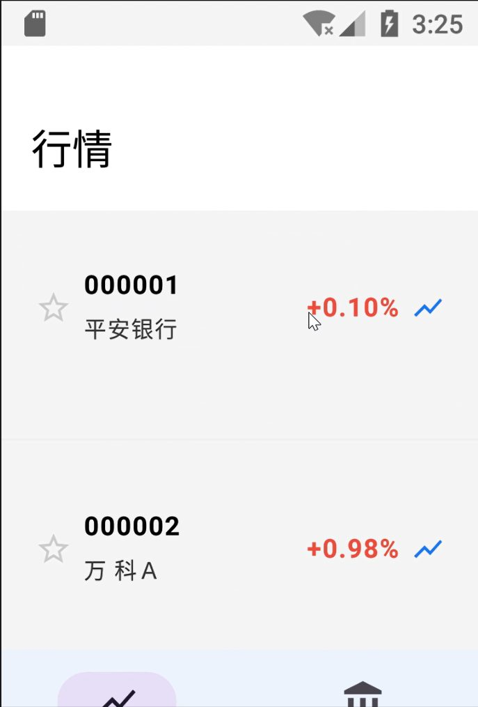

一、项目概述
全市场 A 股模拟炒股 Android 应用。客户端采用 Jetpack Compose + Material3 声明式 UI，Room 本地数据库持久化，通过 Python Flask 代理服务器对接新浪财经 API 解决跨域与 GBK 编码问题。支持全市场行情浏览、拼音搜索、K 线分析、限价模拟交易、持仓盈亏统计、交易日历、收益曲线与 AI 智能助手。初始账户赠送 100 万模拟资金。
| 技术栈 | Kotlin、Jetpack Compose、Material3、Navigation Compose、Room、Retrofit + OkHttp、Coroutines、Canvas 自绘图表 |
|---|---|
| 架构 | 客户端-服务器：App → OkHttp/Retrofit → Flask 代理 → 新浪财经 API → JSON → Room/State |
| 数据表 | trade（交易记录）、position（持仓）、user_account（账户）、watchlist（自选）、asset_snapshot（资产快照） |
二、功能演示视频
完整操作录屏（登录 → 行情 → 搜索 → K 线 → 交易 → 持仓 → 收益曲线 → AI 助手）：
三、关键代码
3.1 网络层：Flask 代理 + 新浪行情 API
StockApiService.kt (API服务)
package com.englearn.stock.service
import com.englearn.stock.model.KLineItem
import com.englearn.stock.model.MarketIndex
import com.englearn.stock.model.Stock
import com.google.gson.Gson
import com.google.gson.reflect.TypeToken
import kotlinx.coroutines.Dispatchers
import kotlinx.coroutines.withContext
import okhttp3.MediaType.Companion.toMediaType
import okhttp3.OkHttpClient
import okhttp3.Request
import okhttp3.RequestBody.Companion.toRequestBody
import java.net.URLEncoder
import java.util.concurrent.TimeUnit
class StockApiService {
private val gson = Gson()
private val client = OkHttpClient.Builder()
.connectTimeout(15, TimeUnit.SECONDS)
.readTimeout(20, TimeUnit.SECONDS)
.build()
companion object {
const val SERVER_IP = "http://10.133.10.88:5000"
private var instance: StockApiService? = null
fun getInstance(): StockApiService {
return instance ?: synchronized(this) {
instance ?: StockApiService().also { instance = it }
}
}
}
private suspend fun doGet(url: String): String = withContext(Dispatchers.IO) {
val request = Request.Builder().url(url).build()
val response = client.newCall(request).execute()
response.body?.string() ?: ""
}
private suspend fun doPost(url: String, json: String): String = withContext(Dispatchers.IO) {
val body = json.toRequestBody("application/json; charset=utf-8".toMediaType())
val request = Request.Builder().url(url).post(body).build()
val response = client.newCall(request).execute()
response.body?.string() ?: ""
}
suspend fun fetchAllStocks(market: String = "all", page: Int = 1, pageSize: Int = 200): List<Stock> {
return try {
val url = "$SERVER_IP/api/stocks?market=$market&page=$page&pageSize=$pageSize"
val json = doGet(url)
val type = object : TypeToken<Map<String, Any>>() {}.type
val map: Map<String, Any> = gson.fromJson(json, type)
val stocksList = map["stocks"] as? List<*> ?: emptyList<Any>()
stocksList.mapNotNull { item ->
val s = item as? Map<*, *> ?: return@mapNotNull null
Stock(
code = s["code"]?.toString() ?: "",
name = s["name"]?.toString() ?: "",
currentPrice = (s["currentPrice"] as? Number)?.toDouble() ?: 0.0,
changePercent = (s["changePercent"] as? Number)?.toDouble() ?: 0.0,
changeAmount = (s["changeAmount"] as? Number)?.toDouble() ?: 0.0,
volume = (s["volume"] as? Number)?.toLong() ?: 0,
todayOpen = (s["todayOpen"] as? Number)?.toDouble() ?: 0.0,
yesterdayClose = (s["yesterdayClose"] as? Number)?.toDouble() ?: 0.0,
highPrice = (s["highPrice"] as? Number)?.toDouble() ?: 0.0,
lowPrice = (s["lowPrice"] as? Number)?.toDouble() ?: 0.0,
market = s["market"]?.toString() ?: ""
)
}
} catch (e: Exception) {
emptyList()
}
}
suspend fun fetchStockQuote(code: String): Stock? {
return try {
val json = doGet("$SERVER_IP/api/stock/$code")
val type = object : TypeToken<Map<String, Any>>() {}.type
val map: Map<String, Any> = gson.fromJson(json, type)3.2 交易服务：资金校验与持仓更新
TradeService.kt (交易服务)
package com.englearn.stock.service
import com.englearn.stock.db.AppDatabase
import com.englearn.stock.model.*
import java.text.SimpleDateFormat
import java.util.*
class TradeService(private val db: AppDatabase) {
private val api = StockApiService.getInstance()
private val sdf = SimpleDateFormat("yyyy-MM-dd HH:mm:ss", Locale.getDefault())
private val dateFmt = SimpleDateFormat("yyyy-MM-dd", Locale.getDefault())
suspend fun initAccount(userId: Long = 1) {
val existing = db.userAccountDao().getByUser(userId)
if (existing == null) {
db.userAccountDao().insert(UserAccount(
userId = userId,
username = "admin",
totalAssets = 1000000.0,
availableFunds = 1000000.0,
createTime = sdf.format(Date()),
updateTime = sdf.format(Date())
))
}
}
suspend fun getAccount(userId: Long = 1): UserAccount {
initAccount(userId)
return db.userAccountDao().getByUser(userId)!!
}
suspend fun buyStock(userId: Long, stockCode: String, quantity: Int, limitPrice: Double): TradeResult {
val account = getAccount(userId)
val stock = api.fetchStockQuote(stockCode) ?: return TradeResult(false, "无法获取股票行情")
if (limitPrice > stock.currentPrice) return TradeResult(false, "限价不能高于当前市价 ${stock.currentPrice}")
val totalAmount = limitPrice * quantity
if (account.availableFunds < totalAmount) return TradeResult(false, "可用资金不足，需要 ¥${"%.2f".format(totalAmount)}")
val trade = Trade(
userId = userId, stockCode = stockCode, stockName = stock.name,
tradeType = "BUY", limitPrice = limitPrice, tradePrice = stock.currentPrice,
tradeQuantity = quantity, tradeAmount = stock.currentPrice * quantity,
tradeTime = sdf.format(Date()), status = "COMPLETED"
)
db.tradeDao().insert(trade)
val newFunds = account.availableFunds - trade.tradeAmount
db.userAccountDao().updateFunds(userId, newFunds, newFunds, sdf.format(Date()))
val existing = db.positionDao().getByStock(userId, stockCode)
if (existing != null) {
val totalQty = existing.quantity + quantity
val avgCost = (existing.costPrice * existing.quantity + trade.tradePrice * quantity) / totalQty
db.positionDao().update(existing.copy(
quantity = totalQty, costPrice = avgCost, currentPrice = stock.currentPrice,
profitLoss = (stock.currentPrice - avgCost) * totalQty,
profitLossPercent = if (avgCost > 0) (stock.currentPrice - avgCost) / avgCost * 100 else 0.0,
updateTime = sdf.format(Date())
))
} else {
db.positionDao().insert(Position(
userId = userId, stockCode = stockCode, stockName = stock.name,
quantity = quantity, costPrice = stock.currentPrice, currentPrice = stock.currentPrice,
updateTime = sdf.format(Date())
))
}
recordSnapshot(userId)
return TradeResult(true, "买入成功", trade)
}
suspend fun sellStock(userId: Long, stockCode: String, quantity: Int, limitPrice: Double): TradeResult {
val account = getAccount(userId)
val stock = api.fetchStockQuote(stockCode) ?: return TradeResult(false, "无法获取股票行情")
if (limitPrice < stock.currentPrice) return TradeResult(false, "限价不能低于当前市价 ${stock.currentPrice}")
val position = db.positionDao().getByStock(userId, stockCode) ?: return TradeResult(false, "无持仓")
if (position.quantity < quantity) return TradeResult(false, "持仓不足，当前持仓 ${position.quantity} 股")
val trade = Trade(
userId = userId, stockCode = stockCode, stockName = stock.name,3.3 K 线页：Canvas 自绘蜡烛图
KLineScreen.kt (K线图)
package com.englearn.stock.ui.kline
import androidx.compose.foundation.Canvas
import androidx.compose.foundation.layout.*
import androidx.compose.foundation.lazy.LazyRow
import androidx.compose.foundation.lazy.items
import androidx.compose.material.icons.Icons
import androidx.compose.material.icons.filled.ArrowBack
import androidx.compose.material3.*
import androidx.compose.runtime.*
import androidx.compose.ui.Modifier
import androidx.compose.ui.geometry.Offset
import androidx.compose.ui.graphics.Color
import androidx.compose.ui.graphics.Path
import androidx.compose.ui.graphics.drawscope.Stroke
import androidx.compose.ui.text.font.FontWeight
import androidx.compose.ui.unit.dp
import androidx.compose.ui.unit.sp
import com.englearn.stock.model.KLineItem
import com.englearn.stock.service.StockApiService
import kotlinx.coroutines.launch
@OptIn(ExperimentalMaterial3Api::class)
@Composable
fun KLineScreen(stockCode: String, stockName: String, scale: String, onBack: () -> Unit) {
val api = remember { StockApiService.getInstance() }
val scope = rememberCoroutineScope()
var klineData by remember { mutableStateOf<List<KLineItem>>(emptyList()) }
var selectedScale by remember { mutableStateOf(scale) }
val isIntraday = selectedScale == "5"
val title = if (isIntraday) "分时图 - $stockName" else "K线 - $stockName"
LaunchedEffect(selectedScale) {
val datalen = when (selectedScale) {
"5" -> 48; "1680" -> 60; "7200" -> 36; else -> 120
}
klineData = api.fetchKLineData(stockCode, selectedScale, datalen)
}
Scaffold(
topBar = {
TopAppBar(title = { Text(title) },
navigationIcon = { IconButton(onClick = onBack) { Icon(Icons.Default.ArrowBack, "返回") } })
}
) { padding ->
Column(modifier = Modifier.padding(padding)) {
// 切换按钮
LazyRow(modifier = Modifier.fillMaxWidth().padding(8.dp), horizontalArrangement = Arrangement.spacedBy(6.dp)) {
val scales = listOf("5" to "分时", "15" to "15分", "30" to "30分", "60" to "60分",
"120" to "120分", "240" to "日K", "1680" to "周K", "7200" to "月K")
items(scales) { (s, label) ->
FilterChip(selected = selectedScale == s, onClick = { selectedScale = s }, label = { Text(label, fontSize = 12.sp) })
}
}
if (klineData.isEmpty()) {
Box(modifier = Modifier.fillMaxSize()) {
CircularProgressIndicator(modifier = Modifier.padding(32.dp))
}
} else {
Canvas(modifier = Modifier.fillMaxWidth().weight(1f)) {
if (isIntraday) {
drawIntradayChart(klineData)
} else {
drawKLineChart(klineData)
}
}
}
}
}
}
private fun androidx.compose.ui.graphics.drawscope.DrawScope.drawIntradayChart(data: List<KLineItem>) {
// 深色背景
drawRect(Color(0xFF1A1A2E))
if (data.isEmpty()) return
val w = size.width
val h = size.height
val pad = 40f四、界面截图





五、测试与总结
- 模块测试：登录、行情、搜索、K 线、交易、自选各模块逐项验证；
- 集成测试：行情→K 线→交易→持仓完整链路数据流转正确；
- 总体测试：Android 模拟器（API 25 x86）全流程运行流畅。
本项目完整实践了现代 Android 声明式开发技术栈，解决了真实行情接入中的编码与跨域问题，并通过本地数据库实现了可靠的模拟交易闭环。